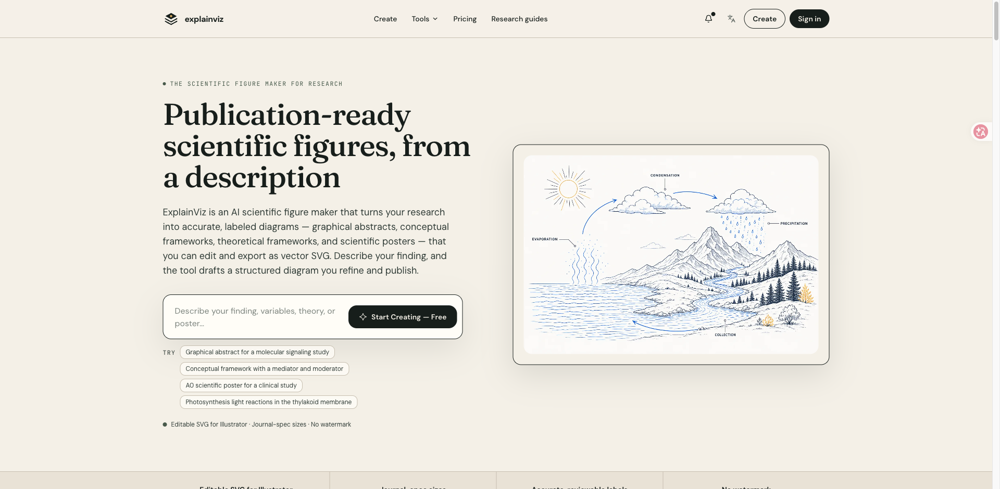

描述你的发现，让 AI 起草一张可投稿的科研配图，再导出成可编辑的 SVG。
一张典型的 graphical abstract：实验组 → 机制 → 结果，期刊版式
.svg
Illustrator 可编辑
期刊单栏 / 双栏尺寸
无水印
ExplainViz 的视觉语言来自期刊版式：衬线体面板标签（A/B/C）、蓝紫 + 橙 + 灰的三色语义分工、误差棒与显著性星号、比例尺，以及底部那句统计说明。它交付的是一张“能放进 Figure 1”的图，而不是一张好看的插图。

一个面向科研的 AI 绘图工具。你描述发现、变量或理论关系，它起草一张带标注的图，你再改、再导出 SVG。覆盖 graphical abstract、概念框架、理论框架、科学插图和学术海报。
关键点是导出矢量 SVG：能进 Illustrator 改，能按期刊尺寸排版，不是一张位图。